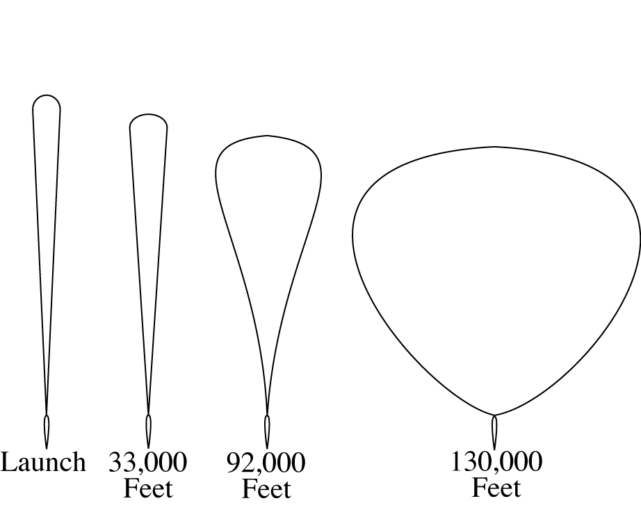

Chapter 9. Special Flights
Section 6. Unmanned Free Balloons
9-6-1. APPLICATION

Apply the following procedures, as appropriate, when unmanned free balloons are within airspace for which you have control jurisdiction:
- Post the balloon flight on flight progress strips along the planned trajectory and revise routing as tracking/position reports require.
- Radar flight follow balloons to the extent that equipment capabilities permit. If radar flight following is not possible, tracking should be attempted by communication with the “chase plane,” telephone contact with the operator, pilot, or ground observation reports.
- With pilot concurrence, provide separation between aircraft and balloons when you are satisfied that the balloon information is sufficiently reliable to provide the service. Do not attempt to separate aircraft from the balloon by using vertical separation unless you have accurate balloon altitude information.
- Provide traffic advisories to all affected aircraft during initial contact specifying the balloon's known or estimated position, direction of movement, and altitude as “unknown” or “reported,” as appropriate.
- To transfer flight following responsibility of balloons between facilities or between controllers, forward the following information when available:
- Identification and type; e.g., Flight 804 Balloon.
- Last known position and altitude.
- General direction of movement and speed.
- ETA over facility boundary, sector boundary, or other point if believed to be reasonably accurate.
- Other pertinent information.
- If in radar contact, physically point out the target to the receiving controller.
- The name and the telephone number of the location where tracking is being accomplished.
9-6-2. DERELICT BALLOONS
Balloons become derelict when a moored balloon slips its mooring and becomes a hazard to air navigation or when an unmanned free balloon flight cannot be terminated as planned. When this occurs:
- In the case of a moored balloon which has slipped its moorings, issue traffic advisories.
- In the case of an unmanned free balloon, flight follow the balloon and, to the extent possible, provide aircraft under your control separation from the balloon.
- Forward balloon position information received from pilot reports or derived from radar returns to your supervisor for further dissemination.
- If radar contact with the balloon is lost, broadcast an advisory to all aircraft operating in the airspace affected by the derelict balloon at 10-minute intervals continuing until the derelict balloon is no longer a factor.
- Transfer flight following responsibility as outlined in paragraph 9-6-1, Application, subparagraph e.